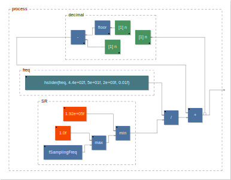
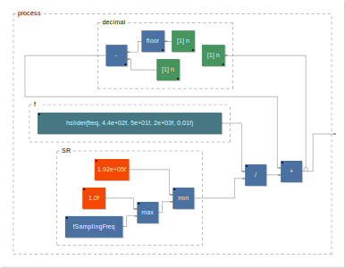
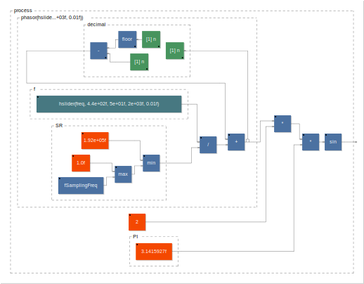

Making a Sine Oscillator From Scratch and Additive Synthesis
Goals
- Implementing a sine oscillator from scratch in Faust
- Understand the relation between the sine function and the generated sound
- Use multiple sine oscillator to implement an additive synthesizer
- Use SmartKeyboard to produce polyphonic mobile apps to control this synth
Sine Function in Faust
- The sine function in Faust works like on a calculator:

will output 0.
To verify this, you could click on the truck (export function) in the Faust Online IDE and then choose
misc/csvto get a table containing the first n samples output by the program.

will output 1.
Note that
stdfaust.libis imported here in order to usema.pi.

will output 0.
Implementing a Phasor
- What is needed to "print" a full sine wave?
- -> We need to create a series of numbers (vector) going from 0 to 2pi, in other words, draw a line.
- First let's create a "counter" in Faust:

Don't forget that you can always print the output of a Faust program by using the in the Faust Online IDE
misc/csv
- The current counter counts one by one. Instead we'd like to count slower 0.01 by 0.01.

- Now, we want to reset the counter back to 0 when it reaches 1. This can be
done easily using the
ma.fracfunction:
Note the use of
ma.fracin the loop here to prevent numerical errors.
- Try to run the program (play button in the editor) and it should make sound! What are we generating here?
- -> A sawtooth wave.
- How do we change the pitch of the sawtooth wave?
- -> We should increment the counter faster or slower. Try different values (e.g., 0.001, 0.1, etc.).
- Instead of controlling the increment of the counter, we'd like to control the frequency of the sawtooth wave.
- To do that, we need to know the number of values of the wave processed by the
computer in one second. That's what we call the sampling rate. This value changes in function of the context of the program so it can be retrieved with
ma.SR. - A sampling rate of 44100 corresponds to a frequency of 44100Hz. If we want a
frequency of 440, what increment do we need to put in our counter?
- ->
freq/ma.SR
- ->
- In the end, we get:
- A this point feel free to plot the output of the Faust program using
misc/csvin the export function of the online editor. - The
freqparameter can be controlled dynamically:

import("stdfaust.lib");
freq = hslider("freq",440,50,2000,0.01);
process = (+(freq/ma.SR) ~ ma.frac);
- The code can be cleaned up by placing our phasor in a function:

import("stdfaust.lib");
f = hslider("freq",440,50,2000,0.01);
phasor(freq) = (+(freq/ma.SR) ~ ma.frac);
process = phasor(f);
Generating a Sine Wave
- Almost there! Now we want our phasor to go from 0 to 2pi so that we can plug
it to the
sinfunction:

import("stdfaust.lib");
f = hslider("freq",440,50,2000,0.01);
phasor(freq) = (+(freq/ma.SR) ~ ma.frac);
osc(freq) = sin(phasor(freq)*2*ma.PI);
process = osc(f);
Note that we created an osc function in order to have a cleaner code.
Additive Synthesis
- A sine wave generates what we call a pure tone. More complex sounds can be produced by adding multiple sine waves together to create harmonics. The frequency and the gain of each harmonic will determine the timbre of the sound. Using this technique, it is possible to "sculpt" a sound.
- A simple organ synthesizer can be implemented using additive synthesis:
import("stdfaust.lib");
f = hslider("freq",440,50,2000,0.01);
phasor(freq) = (+(freq/ma.SR) ~ ma.frac);
osc(freq) = sin(phasor(freq)*2*ma.PI);
organ(freq) = (osc(freq) + osc(freq*2) + osc(freq*3))/3;
process = organ(f);
- This is what we call a harmonic series.
Making a Synthesizer
- In order to use this synthesizer with a keyboard, we need to be able to turn the sound on and off and also to control its volume:
import("stdfaust.lib");
f = hslider("freq",440,50,2000,0.01);
g = hslider("gain",1,0,1,0.01);
t = button("gate");
phasor(freq) = (+(freq/ma.SR) ~ ma.frac);
osc(freq) = sin(phasor(freq)*2*ma.PI);
organ(freq) = (osc(freq) + osc(freq*2) + osc(freq*3))/3;
process = organ(f)*g*t;
- An envelope could be added to make it sound more natural:
import("stdfaust.lib");
f = hslider("freq",440,50,2000,0.01);
g = hslider("gain",1,0,1,0.01);
t = si.smoo(button("gate"));
phasor(freq) = (+(freq/ma.SR) ~ ma.frac);
osc(freq) = sin(phasor(freq)*2*ma.PI);
organ(freq) = (osc(freq) + osc(freq*2) + osc(freq*3))/3;
process = organ(f)*g*t;
- This synth can be controlled with a MIDI keyboard.
Turn it Into an Android App
- Use the export function of the Faust editor and choose
android/smartkeybinstall the app on the phone and have fun! - This could also be turned into an app always making sound and controllable with accelerometers:
import("stdfaust.lib");
f = hslider("freq[acc: 0 0 -10 0 10]",1000,50,2000,0.01) : si.smoo;
phasor(freq) = (+(freq/ma.SR) ~ ma.frac);
osc(freq) = sin(phasor(freq)*2*ma.PI);
organ(freq) = (osc(freq) + osc(freq*2) + osc(freq*3))/3;
process = organ(f);
- In that case, export with
android/android.